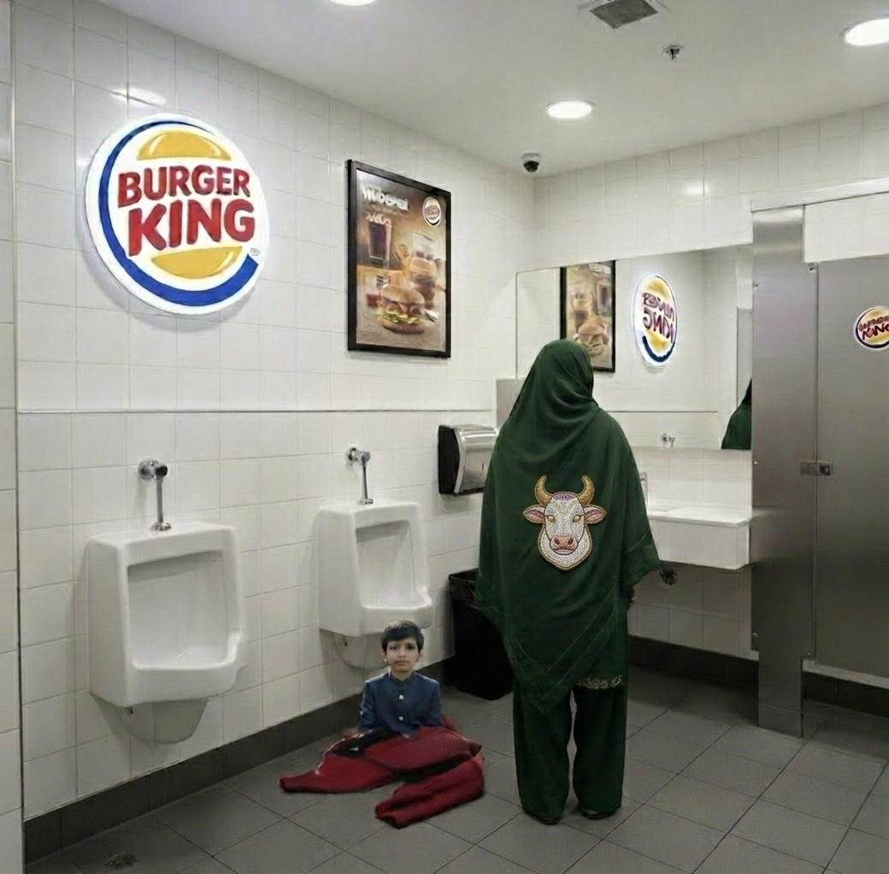

Q5: The Quarter That Ate Time

Amit unveils a fiscal period so large it loops back and milks itself. Viewer discretion: contains forward-looking greed.
Bloodwork for Bankruptcy
Lizzie demos how one drop can forecast both disease and overdraft fees—simultaneously.
The Milk-Slap Heard Round the Galaxy
Watch Gadha's first "voluntary" extraction. Bring headphones—cosmic mooing in surround sound.
After Hours: Gulag Edition

Sterling and Raj getting picked up by the party pooper authorities after a night of "innocent" fun and vandalism. Not suitable for shareholders—or anyone.
Gerchmobile Test Drive

Big Tex revs up the latest Gerchmobile across the Texas plains with Eel On. It's not just a test drive—they're taming it, rodeo-style. Speed? More like a milk-slap to the max.
Gerchlander vs. Insolencium

Neon-green fortress, zero-G smugness. Gerchlander kneels—cape crumpled, ego punctured—while Amit presses a glowing Insolencium shard to his face like a cosmic breath-mint. The world's strongest toddler learns: you can do whatever you want… until the Q5 milk-god says "no."
OXYRELIEF: The Price of Forgetting
Cole Mercer begged Lizzie Holmes to scrub his OxyRelief price-gouging from existence. Her price? Total submission. Now he barks on command, serves as her footstool during board meetings, and calls 5,000% markups "shareholder duty performance art" while she rests her heels on his spine. Some debts are paid in dog years.
IONIX EXPOSED: The Moo Files

Michael Moo strikes again—chopsticks in hand, smoking gun in the other. IONIX blood tests? RNG via Lizzie's coffee. Now she's exposed while Moo celebrates with chow mein on MNN. Let's see Mr. Not-So-Secret Lover Leon riddle his way out of this one. The press loves him; his dry cleaner filed for bankruptcy.
DECLASSIFIED: The Moo Hunt


Michael Moo—eating his feelings in a bunker while Dark Amit and Gerchlander laser the skyline hunting him—dropped these declassified IONIX memos. Per Gerchan Farms threat detection model: "Threat Level - Code Red INSOLENT, immediate termination required." Lizzie ordered "permanent solution," rage-funneling capital into assassins. Moo's desperate prayer to call off the death squad. The press loves him; his life insurance just tripled.
The Indubitable Fortune

Raj discovers his after-hours partner in crime, Sterling, is the 4th Earl of Wensfordshire-on-Thames—bloodline advising crowns since before the plague existed, loaded beyond comprehension. Sterling butlers for fun. For grounding. For the exquisite pleasure of polishing silver worth more than Raj's apartment while pretending to struggle. From Insolencium mines to Space Gulag architecture advisory, Sterling's white-gloved hand is in everything. He collects jobs like others collect stamps. Indubitably.
EXPOSED: The Pink Bow Scandal

Michael Moo doesn't sleep—he surveils. Emerging from a 72-hour chow mein bender, Moo captured self-proclaimed "[I am] extremely asexual" Eel On Muskmelon in a compromising position with his secret lover, dolled out in full flamingo barbie getup. The Senior Sales Exec who promised "1-minute charge, 900K miles" apparently charges his heart just as fast. Blackmail material: secured. Noodles in Moo's hair: evidence. His dry cleaner: bankrupt for the 3rd time. The press loves him; Eel On's voice cracked mid-explanation.
ORIGIN: The Whopper Abandonment

Young Amit Gaur: left sitting on a red acrylic sweater on a Boston, Massachusetts Burger King bathroom floor, circa 1981. She never returned. The sweater wasn't his. The floor was sticky. A Whopper wrapper became his first blanket. Why? Q6 Profits Apocalypse Variant Amit Jr. time-warped in with Gadha, warning Amit's mother about the ill fate of Gerchan Farms should Q6 profits come into fruition. Mom evaluated both children, kept Evil Amit ("he seemed manageable"), and ghosted regular Amit like a bad Tinder date. Took the sweater. Left the child. The fluorescent hum became his lullaby. Some say "Have It Your Way" still echoes in his quarterly projections.
Amit's mother's face not shown. Face never shown. Face predates the concept of showing.